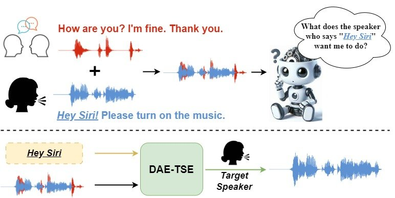
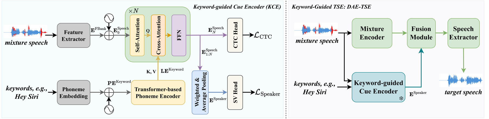
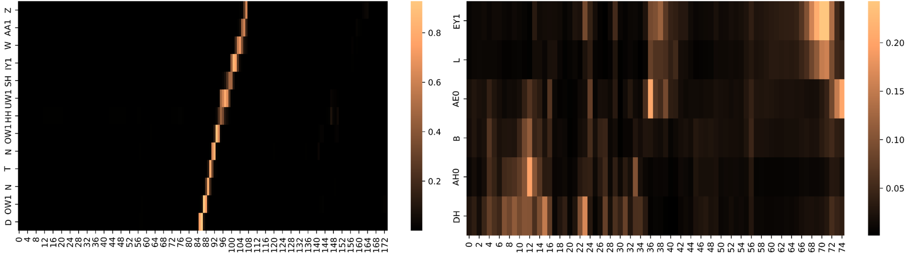

Detect, Attend and Extract: Keyword Guided Target Speaker Extraction
Paper Overview

Abstract
Target speaker extraction (TSE) aims to extract the speech of a target speaker from mixtures containing multiple competing speakers. Conventional TSE systems predominantly rely on speaker cues, such as pre-enrolled speech, to identify and isolate the target speaker. However, in many practical scenarios, clean enrollment utterances are unavailable, limiting the applicability of existing approaches. In this work, we propose DAE-TSE, a keyword-guided TSE framework that specifies the target speaker through distinct keywords they utter. By leveraging keywords (i.e., partial transcriptions) as cues, our approach provides a flexible and practical alternative to enrollment-based TSE. DAE-TSE follows the Detect-Attend-Extract (DAE) paradigm: it first detects the presence of the given keywords, then attends to the corresponding speaker based on the keyword content, and finally extracts the target speech. Experimental results demonstrate that DAE-TSE outperforms standard TSE systems that rely on clean enrollment speech. To the best of our knowledge, this is the first study to utilize partial transcription as a cue for specifying the target speaker in TSE, offering a flexible and practical solution for real-world scenarios. Our code and demo page are now publicly available.
Method

The proposed DAE-TSE follows a three-stage detect-attend-extract formulation: the KCE first detects the presence of keywords; if confirmed, it attends to the target speaker; finally, the TSE backbone extracts the target speaker's speech.
- Detect. DAE-TSE first detects the presence of keywords and pinpoints their temporal span through a lightweight search of the mixture. If the keyword is absent in the detection stage, the system outputs silence; otherwise, it proceeds. The cross-attention mechanism between speech and transcriptions naturally establishes frame-level correspondences between the acoustic sequence and the text-based keywords, effectively transforming detection and localization into a search problem. Leveraging this property, we develop a lightweight dynamic programming algorithm that traverses the attention matrix to efficiently detect keyword presence and localize their temporal positions in the mixture. The algorithm processes the phoneme-level cross-attention map from the final KCE layer to compute the maximal path score, the start and trigger frame indices, and a detection flag determined by thresholding against a predefined threshold. With a computational complexity that scales linearly with the keyword length and the number of speech frames, the procedure efficiently handles typical keyword lengths.
- Attend. If keyword presence is confirmed, the DAE-TSE encoder extracts a fixed-dimension speaker embedding through speech-text cross-attention and pooling, as described above.
- Extract. With the speaker embedding obtained, the TSE backbone extracts the speech of the target speaker from the mixture.

In-Domain Samples
5 test cases demonstrating keyword-guided target speaker extraction on LibriMix data.
Each case contains a LibriMix mixture, complete transcriptions, ground-truth audio, enrollment keywords, and extracted outputs.
Out-of-Domain Samples
1 test case demonstrating keyword-guided target speaker extraction on out-of-domain data.
Each case contains a mixture, enrollment keywords, and extracted output. Ground-truth and speech enrollment are not available.
BibTeX
@article{li2026detect,
title={Detect, Attend and Extract: Keyword Guided Target Speaker Extraction},
author={Li, Haoyu and Xi, Yu and Jiang, Yidi and Wang, Shuai and Knill, Kate and Gales, Mark and Li, Haizhou and Yu, Kai},
journal={arXiv preprint arXiv:2602.07977},
year={2026}
}